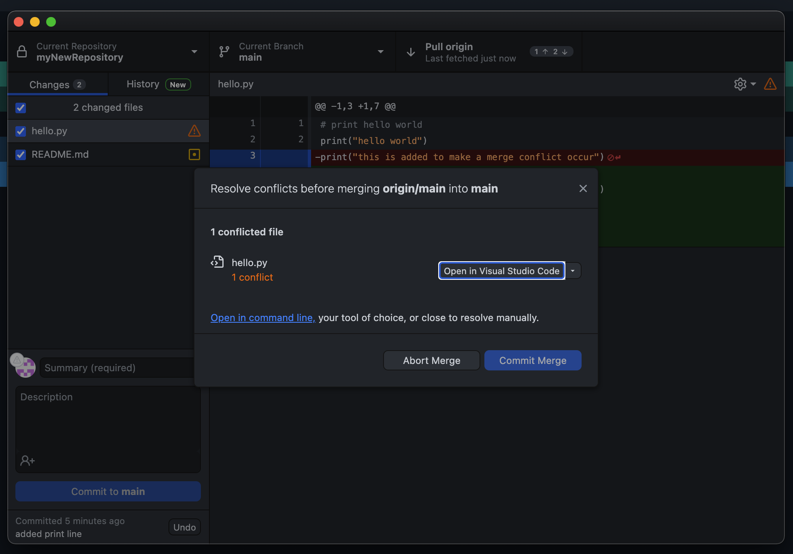

Lesson 5-3
How to fix a Merge Conflict
GitHub Desktop
I can't cover all types of merge conflicts, or else we would be here all day. So I will show to most basic type, an issue with a file. To do this, I have modified the file named "hello.py" locally by adding a print statement. On GitHub.com, I added a input statement on the same line. This is what you will see first:
Figure 5A: GitHub Desktop already knows what is going on.On GitHub Desktop, when you try to commit/push, you'll notice that it opens a new window, like figure 5B. It will show you what file(s) are causing the problem, and it will ask you to open it in your Integrated Development Environment (IDE) (mine is Visual Studio Code, 10/10 def recommend).
 Figure 5B: You'll see something like this, thusly indicating a merge conflict. If you don't want to make any changes, go ahead and click "abort conflict". Otherwise, follow the proceeding steps.- Open the file in your preferred IDE.
- Notice the different colors. They indicate the different versions of the file, along with their commit ids. Go ahead and edit the file as you normally would, getting rid of the lines that say "<<<<<<<head" and any lines that would not compile.
- Save the file, and go back to the GitHub Desktop window.
- In the GitHub Desktop Window, click "Commit Merge".
- Once the popup disappears, do a push like normal.
Terminal
The steps to fix this are similar, just in the terminal environment.
- Use the cd command to enter the directory where you repository is saved.
- Do the git pull command.
- Now we want to settle the changes by editing the file. To do this, type in nano fileName.fileExtension, which in my case is nano hello.py
- Just like before, get rid of any lines that would cause your file not to compile, as well as any changes that you do not want to have in the final product. To exit, do (on mac and windows) CTRL+X, then Y, then return/enter.
- Commit and Push as usual. The order is git add --all,git commit -m "messageGoesHere", and git push.
Congrats! You have navigated the world of merge conflicts with flying colors! This was hard I know, so let's take a break and review on the next page.